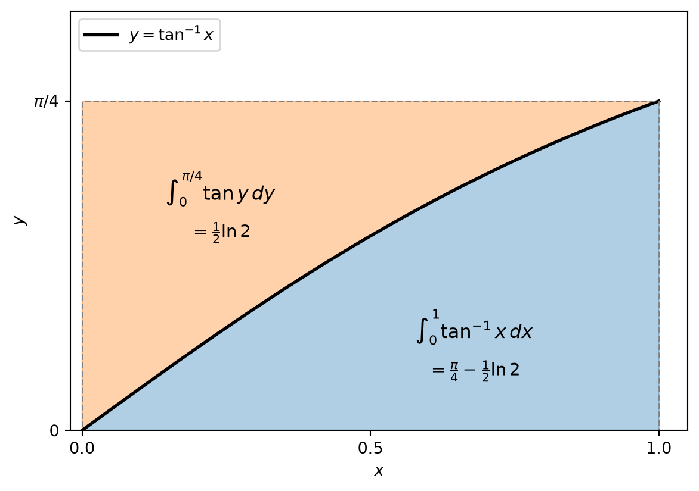
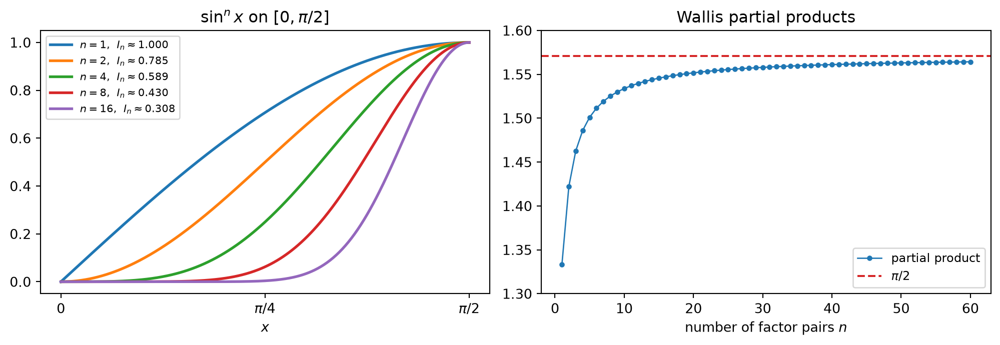

flowchart LR A["Product Rule<br/>(fg)' = f'g + fg'"] --> B["Integration by parts<br/>integral of u dv = uv - integral of v du"] B --> C["Definite form<br/>boundary term [uv] from a to b"] B --> D["Strategies"] D --> D1["Polynomial times trig or exp<br/>repeat until the polynomial is gone"] D --> D2["Lone function<br/>take dv = dx"] D --> D3["Cyclic<br/>the integral reappears, solve for it"] D --> D4["Substitute first<br/>then integrate by parts"] B --> E["Reduction formulas<br/>I_n in terms of I_(n-1) or I_(n-2)"]
Integrals: Integration by Parts
The Product Rule, read backwards
The Substitution Rule is the Chain Rule read backwards. Integration by parts is the Product Rule read backwards. It does not evaluate an integral by itself. It exchanges one integral for another, and the whole skill lies in choosing the exchange so that the new integral is easier than the old one.
1 The Formula
1.1 Where it comes from
If \(f\) and \(g\) are differentiable, the Product Rule states \[ \frac{d}{dx}\big[f(x)g(x)\big] = f(x)g'(x) + g(x)f'(x). \] In the notation for indefinite integrals this becomes \[ \int \big[f(x)g'(x) + g(x)f'(x)\big]\,dx = f(x)g(x), \qquad\text{or}\qquad \int f(x)g'(x)\,dx + \int g(x)f'(x)\,dx = f(x)g(x). \] Moving the second integral to the right side gives the formula.
NoteIntegration by parts
\[ \int f(x)g'(x)\,dx = f(x)g(x) - \int g(x)f'(x)\,dx. \] With \(u = f(x)\) and \(v = g(x)\), the differentials are \(du = f'(x)\,dx\) and \(dv = g'(x)\,dx\), and the formula reads \[ \int u\,dv = uv - \int v\,du. \]
1.2 What the formula trades
On the left, \(u\) appears as it is and \(v\) appears only through its derivative. On the right, the roles are reversed: \(v\) appears as it is and \(u\) appears through its derivative. The derivative is moved from one factor to the other.
This pays off when two things happen at once:
- \(du\) is simpler than \(u\) (a polynomial loses a degree, \(\ln x\) becomes \(1/x\), \(\tan^{-1}x\) becomes \(1/(1+x^2)\)), and
- \(v\) can be found and is no more complicated than \(dv\) (\(e^{x}\), \(\sin x\), \(\cos x\), powers of \(x\)).
1.3 Any antiderivative of \(dv\) works
The formula needs an antiderivative \(v\), not a particular one. Replacing \(v\) by \(v + K\) for a constant \(K\), \[ u(v+K) - \int (v+K)\,du = uv + Ku - \int v\,du - Ku = uv - \int v\,du, \] up to the arbitrary constant of integration. So the simplest choice, \(K = 0\), is the usual one.
Occasionally a different \(K\) is cleverer. For \(\int x\tan^{-1}x\,dx\), take \(u = \tan^{-1}x\) and \(dv = x\,dx\), but choose \(v = \tfrac12(x^2+1)\) instead of \(\tfrac12 x^2\): \[ \int x\tan^{-1}x\,dx = \frac{x^2+1}{2}\tan^{-1}x - \int \frac{x^2+1}{2}\cdot\frac{1}{1+x^2}\,dx = \frac{x^2+1}{2}\tan^{-1}x - \frac{x}{2} + C. \] The constant was chosen so that \(v\) cancels the denominator of \(du\).
1.4 A first example
For \(\int x\sin x\,dx\), let \[ u = x,\quad dv = \sin x\,dx \qquad\Longrightarrow\qquad du = dx,\quad v = -\cos x. \] Then \[ \int x\sin x\,dx = -x\cos x - \int(-\cos x)\,dx = -x\cos x + \sin x + C. \] Differentiating the answer gives \(-\cos x + x\sin x + \cos x = x\sin x\), as it should.
The reverse choice \(u = \sin x\), \(dv = x\,dx\) is legal but useless: \[ \int x\sin x\,dx = \frac{x^2}{2}\sin x - \frac12\int x^2\cos x\,dx. \] The equation is true, but the power of \(x\) went up instead of down.
2 Choosing \(u\) and \(dv\)
TipRule of thumb
Choose \(u\) so that differentiating simplifies it, and \(dv\) so that it can be integrated without getting worse. A common ordering for \(u\), from best to worst, is Logarithmic, Inverse trigonometric, Algebraic, Trigonometric, Exponential (LIATE). It is a heuristic, not a rule.
| Integrand | Choice | Why it works |
|---|---|---|
| polynomial \(\times\) \(\sin\), \(\cos\), \(e^{ax}\) | \(u\) = polynomial | each step lowers the degree by one |
| \(\ln x\) or an inverse trig function, alone | \(u\) = the function, \(dv = dx\) | its derivative is algebraic |
| \(x^k\ln x\) | \(u = \ln x\), \(dv = x^k\,dx\) | \(\ln x\) differentiates to \(1/x\), which cancels a power |
| \(e^{ax}\times\sin bx\) or \(\cos bx\) | either, but the same type in both steps | the original integral reappears |
| a composite such as \(\cos\sqrt{x}\) | substitute first | the substitution exposes a product |
LIATE can fail. In \(\int x^3 e^{x^2}\,dx\) it suggests \(u = x^3\), \(dv = e^{x^2}dx\), but \(e^{x^2}\) has no elementary antiderivative. The working split is \(u = x^2\), \(dv = x e^{x^2}dx\), so \(v = \tfrac12 e^{x^2}\) and \[ \int x^3 e^{x^2}\,dx = \frac12 x^2 e^{x^2} - \int x e^{x^2}\,dx = \frac12 e^{x^2}\left(x^2 - 1\right) + C. \] The real criterion is always the pair of conditions above: \(du\) simpler, \(v\) available.
2.1 A lone function: take \(dv = dx\)
When the integrand is a single function whose derivative is simpler, let \(dv = dx\) and \(v = x\): \[ \int f(x)\,dx = x f(x) - \int x f'(x)\,dx. \]
\[ \int \ln x\,dx = x\ln x - \int x\cdot\frac1x\,dx = x\ln x - x + C, \] \[ \int \tan^{-1}x\,dx = x\tan^{-1}x - \int\frac{x}{1+x^2}\,dx = x\tan^{-1}x - \frac12\ln(1+x^2) + C. \] The last integral is a substitution with \(t = 1 + x^2\).
2.2 A logarithm times a power
Here \(\ln x\) must be \(u\), because it cannot be integrated as a factor but differentiates to \(1/x\). \[ \int x\ln x\,dx = \frac12 x^2\ln x - \int \frac12 x^2\cdot\frac1x\,dx = \frac12 x^2\ln x - \frac14 x^2 + C. \] With \(dv = x^{-2}dx\), so \(v = -x^{-1}\), \[ \int \frac{\ln x}{x^2}\,dx = -\frac{\ln x}{x} + \int \frac{1}{x^2}\,dx = -\frac{1+\ln x}{x} + C. \]
2.3 Repeated integration by parts
For \(\int x^2\cos mx\,dx\) with \(m \ne 0\), take \(u = x^2\), \(dv = \cos mx\,dx\), so \(du = 2x\,dx\) and \(v = \tfrac1m\sin mx\): \[ \int x^2\cos mx\,dx = \frac1m x^2\sin mx - \frac2m\int x\sin mx\,dx. \] The new integral has degree one. With \(u = x\), \(dv = \sin mx\,dx\), \(v = -\tfrac1m\cos mx\): \[ \int x\sin mx\,dx = -\frac{x}{m}\cos mx + \frac1m\int\cos mx\,dx = -\frac{x}{m}\cos mx + \frac{1}{m^2}\sin mx. \] The factor \(\tfrac2m\) in front multiplies every term of this result: \[ \int x^2\cos mx\,dx = \frac1m x^2\sin mx + \frac{2}{m^2}x\cos mx - \frac{2}{m^3}\sin mx + C. \]
2.3.1 The tabular method
When \(u\) is a polynomial and \(dv\) can be integrated repeatedly, the bookkeeping fits in a table. Differentiate \(u\) down to zero in one column, integrate \(dv\) repeatedly in the other, and multiply along the diagonals with alternating signs \(+,-,+,\dots\)
| sign | \(u\) and its derivatives | \(dv\) and its integrals |
|---|---|---|
| \(+\) | \(x^2\) | \(\cos mx\) |
| \(-\) | \(2x\) | \(\tfrac1m\sin mx\) |
| \(+\) | \(2\) | \(-\tfrac{1}{m^2}\cos mx\) |
| \(0\) | \(-\tfrac{1}{m^3}\sin mx\) |
The diagonal products are \(+\,x^2\cdot\tfrac1m\sin mx\), then \(-\,2x\cdot\left(-\tfrac{1}{m^2}\cos mx\right)\), then \(+\,2\cdot\left(-\tfrac{1}{m^3}\sin mx\right)\), which reproduces the result above. The table is the same computation as before with the coefficients carried automatically, which is exactly where hand computation tends to slip.
2.4 Cyclic integrals
Sometimes integrating by parts twice brings back the original integral. Then the formula becomes an equation for the unknown integral.
Let \(I = \int e^x\sin x\,dx\). With \(u = \sin x\), \(dv = e^x dx\): \[ I = e^x\sin x - \int e^x\cos x\,dx. \] With \(u = \cos x\), \(dv = e^x dx\) again: \[ \int e^x\cos x\,dx = e^x\cos x + \int e^x\sin x\,dx = e^x\cos x + I. \] Substituting, \[ I = e^x\sin x - e^x\cos x - I \qquad\Longrightarrow\qquad I = \frac12 e^x(\sin x - \cos x) + C. \] The constant \(C\) is added once, after solving.
Keep the same type of choice in both steps. If the second step instead used \(u = e^x\), \(dv = \cos x\,dx\), it would undo the first step and return the identity \(I = I\).
2.4.1 The general formula
For \(b \ne 0\), let \(I = \int e^{ax}\sin bx\,dx\) and \(J = \int e^{ax}\cos bx\,dx\). Taking \(u = e^{ax}\) in both, \[ I = -\frac1b e^{ax}\cos bx + \frac ab J, \qquad J = \frac1b e^{ax}\sin bx - \frac ab I. \] Eliminating \(J\) gives \(\left(1 + \dfrac{a^2}{b^2}\right) I = \dfrac{e^{ax}}{b^2}\left(a\sin bx - b\cos bx\right)\), so \[ \int e^{ax}\sin bx\,dx = \frac{e^{ax}\left(a\sin bx - b\cos bx\right)}{a^2+b^2} + C, \qquad \int e^{ax}\cos bx\,dx = \frac{e^{ax}\left(a\cos bx + b\sin bx\right)}{a^2+b^2} + C. \] With \(a = b = 1\) this recovers the previous result. With \(a = 2\), \(b = 3\), \[ \int e^{2\theta}\sin 3\theta\,d\theta = \frac{e^{2\theta}}{13}\left(2\sin 3\theta - 3\cos 3\theta\right) + C. \]
2.4.2 Cross-check with complex exponentials
Both formulas are the imaginary and real parts of one integral. Since \(e^{ax}e^{ibx} = e^{(a+ib)x}\), \[ \int e^{(a+ib)x}\,dx = \frac{e^{(a+ib)x}}{a+ib} = \frac{(a-ib)\,e^{ax}\left(\cos bx + i\sin bx\right)}{a^2+b^2}. \] The real part is \(e^{ax}(a\cos bx + b\sin bx)/(a^2+b^2)\) and the imaginary part is \(e^{ax}(a\sin bx - b\cos bx)/(a^2+b^2)\). The two rounds of integration by parts and the elimination step are what the single division by \(a + ib\) does in phasor form.
A decaying sinusoid is the case \(a = -\alpha < 0\), \(b = \beta\). Evaluating the antiderivative at \(t = 0\) gives \(-\beta/(\alpha^2+\beta^2)\), and at large \(t\) it decays to \(0\), so \[ \int_0^{T} e^{-\alpha t}\sin\beta t\,dt \;\longrightarrow\; \frac{\beta}{\alpha^2+\beta^2} \quad\text{as } T \to \infty. \]
2.5 Substitute first, then integrate by parts
\(\int\cos\sqrt{x}\,dx\) is not a product yet. Let \(t = \sqrt{x}\), so \(x = t^2\) and \(dx = 2t\,dt\): \[ \int\cos\sqrt{x}\,dx = 2\int t\cos t\,dt. \] Now integrate by parts with \(u = t\), \(dv = \cos t\,dt\): \[ 2\int t\cos t\,dt = 2\left(t\sin t + \cos t\right) + C = 2\sqrt{x}\,\sin\sqrt{x} + 2\cos\sqrt{x} + C. \] The factor \(2\) produced by \(dx = 2t\,dt\) must survive to the final line.
3 Definite Integrals
Combining the formula with the Evaluation Theorem gives a definite version.
NoteIntegration by parts for definite integrals
If \(f'\) and \(g'\) are continuous on \([a,b]\), then \[ \int_a^b f(x)g'(x)\,dx = \Big[f(x)g(x)\Big]_a^b - \int_a^b g(x)f'(x)\,dx. \]
Evaluate the boundary term at both limits right away, then work on the remaining integral, which keeps the same limits.
3.1 Worked examples
An inverse tangent. For \(\int_0^1\tan^{-1}x\,dx\), let \(u = \tan^{-1}x\), \(dv = dx\), so \(du = dx/(1+x^2)\) and \(v = x\): \[ \int_0^1\tan^{-1}x\,dx = \Big[x\tan^{-1}x\Big]_0^1 - \int_0^1\frac{x}{1+x^2}\,dx = \frac\pi4 - \int_0^1\frac{x}{1+x^2}\,dx. \] For the remaining integral let \(t = 1 + x^2\), so \(x\,dx = \tfrac12 dt\), and the limits become \(t = 1\) and \(t = 2\): \[ \int_0^1\frac{x}{1+x^2}\,dx = \frac12\int_1^2\frac{dt}{t} = \frac12\ln 2. \] Therefore \[ \int_0^1\tan^{-1}x\,dx = \frac\pi4 - \frac{\ln 2}{2} \approx 0.4388. \]
A logarithm over a square. With \(u = \ln x\) and \(v = -x^{-1}\), \[ \int_1^2\frac{\ln x}{x^2}\,dx = \Big[-\frac{\ln x}{x}\Big]_1^2 + \int_1^2\frac{dx}{x^2} = -\frac{\ln 2}{2} + \Big[-\frac1x\Big]_1^2 = -\frac{\ln 2}{2} + \frac12 = \frac12\left(1 - \ln 2\right). \] At the lower limit the boundary term is \(0\) because \(\ln 1 = 0\).
A polynomial times a decaying exponential. For \(\int_0^1(x^2+1)e^{-x}\,dx\), take \(u = x^2 + 1\), \(dv = e^{-x}dx\), so \(v = -e^{-x}\): \[ \int_0^1(x^2+1)e^{-x}\,dx = \Big[-(x^2+1)e^{-x}\Big]_0^1 + 2\int_0^1 xe^{-x}\,dx = \left(1 - 2e^{-1}\right) + 2\int_0^1 xe^{-x}\,dx. \] Once more, with \(u = x\): \[ \int_0^1 xe^{-x}\,dx = \Big[-xe^{-x}\Big]_0^1 + \int_0^1 e^{-x}\,dx = -e^{-1} + \left(1 - e^{-1}\right) = 1 - 2e^{-1}. \] Collecting terms, \[ \int_0^1(x^2+1)e^{-x}\,dx = \left(1 - 2e^{-1}\right) + 2\left(1 - 2e^{-1}\right) = 3 - 6e^{-1} \approx 0.7927. \] The tabular method gives the antiderivative in one line, \(-e^{-x}\left(x^2 + 2x + 3\right)\), and \(\left[-e^{-x}(x^2+2x+3)\right]_0^1 = 3 - 6e^{-1}\) confirms the result.
3.2 Picture: two areas that fill a rectangle
Write the definite formula as \[ \int u\,dv + \int v\,du = \Big[uv\Big]. \] When \(u\) and \(v\) both increase from \(0\), the two integrals are the two regions into which the curve divides a rectangle. For \(u = \tan^{-1}x\) and \(v = x\) on \([0,1]\), the rectangle is \([0,1]\times[0,\pi/4]\).

The region to the left of the curve is measured along the vertical axis: there \(x = \tan y\) for \(0 \le y \le \pi/4\), and \[ \int_0^{\pi/4}\tan y\,dy = \Big[\ln|\sec y|\Big]_0^{\pi/4} = \ln\sqrt2 = \frac12\ln 2, \] which is exactly the value of \(\int v\,du = \int_0^1 \dfrac{x}{1+x^2}\,dx\).
The same picture gives a general formula. If \(f\) is increasing with inverse \(g\) and \(0 < a < b\), then \[ \int_a^b f(x)\,dx = b f(b) - a f(a) - \int_{f(a)}^{f(b)} g(y)\,dy. \] It follows from the lone-function formula \(\int f\,dx = xf - \int xf'\,dx\) with the substitution \(y = f(x)\), \(x = g(y)\). An integral of a function can be traded for an integral of its inverse.
4 Reduction Formulas
A reduction formula expresses an integral that depends on an integer \(n\) in terms of the same kind of integral with a smaller \(n\). Repeating it reduces the problem to a base case.
4.1 Powers of sine
For \(\int\sin^n x\,dx\) with \(n \ge 2\), let \[ u = \sin^{n-1}x,\quad dv = \sin x\,dx \qquad\Longrightarrow\qquad du = (n-1)\sin^{n-2}x\cos x\,dx,\quad v = -\cos x. \] Then \[ \int\sin^n x\,dx = -\cos x\sin^{n-1}x + (n-1)\int\sin^{n-2}x\cos^2 x\,dx. \] Since \(\cos^2 x = 1 - \sin^2 x\), \[ \int\sin^n x\,dx = -\cos x\sin^{n-1}x + (n-1)\int\sin^{n-2}x\,dx - (n-1)\int\sin^n x\,dx. \] The original integral appears on both sides, as in the cyclic case. Moving it to the left gives \(n\int\sin^n x\,dx\) on the left.
NoteReduction formula for \(\sin^n x\)
For \(n \ge 2\), \[ \int\sin^n x\,dx = -\frac1n\cos x\sin^{n-1}x + \frac{n-1}{n}\int\sin^{n-2}x\,dx. \] The companion formula for cosine is \[ \int\cos^n x\,dx = \frac1n\cos^{n-1}x\sin x + \frac{n-1}{n}\int\cos^{n-2}x\,dx. \]
Repeated use reduces \(\int\sin^n x\,dx\) to \(\int\sin x\,dx\) when \(n\) is odd and to \(\int dx\) when \(n\) is even. For \(n = 2\), \[ \int\sin^2 x\,dx = -\frac12\cos x\sin x + \frac12 x + C = \frac x2 - \frac{\sin 2x}{4} + C. \]
4.2 On \([0, \pi/2]\)
Let \(I_n = \displaystyle\int_0^{\pi/2}\sin^n x\,dx\). The boundary term \(-\tfrac1n\cos x\sin^{n-1}x\) vanishes at both limits when \(n \ge 2\): \(\sin 0 = 0\) at the lower limit and \(\cos\tfrac\pi2 = 0\) at the upper limit. So \[ I_n = \frac{n-1}{n}\,I_{n-2}, \qquad I_0 = \frac\pi2,\quad I_1 = 1. \]
| \(n\) | \(0\) | \(1\) | \(2\) | \(3\) | \(4\) | \(5\) | \(6\) |
|---|---|---|---|---|---|---|---|
| \(I_n\) | \(\tfrac\pi2\) | \(1\) | \(\tfrac\pi4\) | \(\tfrac23\) | \(\tfrac{3\pi}{16}\) | \(\tfrac{8}{15}\) | \(\tfrac{5\pi}{32}\) |
Unrolling the recursion gives closed forms: \[ I_{2n+1} = \frac{2\cdot4\cdot6\cdots(2n)}{3\cdot5\cdot7\cdots(2n+1)}, \qquad I_{2n} = \frac{1\cdot3\cdot5\cdots(2n-1)}{2\cdot4\cdot6\cdots(2n)}\cdot\frac\pi2. \] Odd powers give rational numbers and even powers give rational multiples of \(\pi\).
4.3 The Wallis product (outline)
On \([0,\pi/2]\) we have \(0 \le \sin x \le 1\), so \(\sin^{2n+2}x \le \sin^{2n+1}x \le \sin^{2n}x\), and therefore \(I_{2n+2} \le I_{2n+1} \le I_{2n}\). Dividing by \(I_{2n}\) and using the recursion, \[ \frac{2n+1}{2n+2} \le \frac{I_{2n+1}}{I_{2n}} \le 1. \] The left side tends to \(1\), so the ratio tends to \(1\). Substituting the closed forms into the ratio, \[ \frac{I_{2n+1}}{I_{2n}} = \frac2\pi\cdot\frac21\cdot\frac23\cdot\frac43\cdot\frac45\cdots\frac{2n}{2n-1}\cdot\frac{2n}{2n+1} \;\longrightarrow\; 1, \] which gives \[ \frac\pi2 = \frac21\cdot\frac23\cdot\frac43\cdot\frac45\cdot\frac65\cdot\frac67\cdots \]

4.4 Other reduction formulas
The same pattern works whenever differentiating \(u\) lowers an exponent and \(dv\) integrates to something just as simple.
With \(u = (\ln x)^n\), \(dv = dx\): \[ \int(\ln x)^n\,dx = x(\ln x)^n - n\int(\ln x)^{n-1}\,dx. \] With \(u = x^n\), \(dv = e^x dx\): \[ \int x^n e^x\,dx = x^n e^x - n\int x^{n-1}e^x\,dx. \] Applying the first one three times, \[ \int(\ln x)^3\,dx = x(\ln x)^3 - 3x(\ln x)^2 + 6x\ln x - 6x + C. \]
4.5 Moments of an exponentially distributed SNR
Under Rayleigh fading, the instantaneous SNR \(\gamma\) is exponentially distributed with mean \(\bar\gamma\): \[ f(\gamma) = \frac{1}{\bar\gamma}e^{-\gamma/\bar\gamma}, \qquad \gamma \ge 0. \] With \(t = \gamma/\bar\gamma\), the \(n\)-th moment is \[ \mathbb{E}\left[\gamma^n\right] = \int_0^\infty \gamma^n\,\frac{1}{\bar\gamma}e^{-\gamma/\bar\gamma}\,d\gamma = \bar\gamma^{\,n}\int_0^\infty t^n e^{-t}\,dt = \bar\gamma^{\,n} M_n. \] Integrating \(M_n\) by parts with \(u = t^n\), \(dv = e^{-t}dt\), \[ M_n = \Big[-t^n e^{-t}\Big]_0^\infty + n\int_0^\infty t^{n-1}e^{-t}\,dt = n M_{n-1}, \] because \(t^n e^{-t} \to 0\) as \(t \to \infty\) (the exponential wins over any power). Here the upper limit \(\infty\) is handled informally, as a limit of \(\int_0^T\). Since \(M_0 = 1\), we get \(M_n = n!\) and \[ \mathbb{E}\left[\gamma^n\right] = n!\,\bar\gamma^{\,n}. \] In particular \(\mathbb{E}[\gamma^2] = 2\bar\gamma^2\), so \(\operatorname{Var}(\gamma) = \bar\gamma^2\) and the amount of fading \(\operatorname{Var}(\gamma)/\mathbb{E}[\gamma]^2\) equals \(1\). For non-integer exponents the same computation gives the Gamma function identity \(\Gamma(s+1) = s\,\Gamma(s)\), where \(\Gamma(s) = \int_0^\infty t^{s-1}e^{-t}\,dt\). That identity is what makes the moments of Nakagami-\(m\) fading computable.
5 Common Pitfalls
- Not distributing the coefficient in front of \(\int v\,du\). In \(\tfrac1m x^2\sin mx - \tfrac2m\int x\sin mx\,dx\), the factor \(\tfrac2m\) multiplies every term of the inner result. Keeping \(\tfrac1m\) on one term, or applying the factor to only the first term, is the most common slip in repeated integration by parts.
- Dropping a constant created by substitution. In \(\int\cos\sqrt{x}\,dx = 2\int t\cos t\,dt\), the \(2\) comes from \(dx = 2t\,dt\) and multiplies the entire final answer.
- Careless collection of like terms. A definite integral done in two rounds produces several multiples of the same constant. Group them explicitly, as in \(\left(1 - 2e^{-1}\right) + 2\left(1 - 2e^{-1}\right)\), before simplifying.
- Sign of \(v\). \(\int\sin x\,dx = -\cos x\), so \(dv = \sin x\,dx\) gives \(v = -\cos x\), and then \(-\int v\,du\) becomes \(+\int\cos x\,du\). Two minus signs meet here.
- Making the integral worse. If \(\int v\,du\) has a higher power or a more complicated function than the original, swap \(u\) and \(dv\).
- Switching roles in a cyclic integral. In the second step, keep the same type of function as \(u\). Switching undoes the first step and gives \(I = I\).
- Adding \(+C\) too early in a cyclic integral. Solve the equation for \(I\) first, then add one constant.
- Boundary terms and limits. Evaluate \([uv]_a^b\) at both limits. Values such as \(\ln 1 = 0\) or a factor of \(x\) at \(x = 0\) often kill one end, but check rather than assume. Every later integral keeps the original limits.
6 Self-Check Toolkit
- Differentiate the answer. The derivative of an indefinite integral must reproduce the integrand exactly. A missing \(\tfrac12\) or a wrong power of \(m\) shows up immediately.
- Scaling check for parameters. If a parameter enters only through \(mx\), substitute \(t = mx\). Then \[ \int x^2\cos mx\,dx = \frac{1}{m^3}\int t^2\cos t\,dt, \] so every term of the answer must have the form \(x^k/m^{3-k}\) times a trig function of \(mx\). A term like \(x\cos mx/m\) fails this test without any further computation.
- Special parameter values. Setting \(a = b = 1\) in the formula for \(\int e^{ax}\sin bx\,dx\) must give the known result for \(\int e^x\sin x\,dx\).
- Compute a definite integral two ways. Do it step by step with the definite formula, then find the full antiderivative (for example by the tabular method) and evaluate it once. The two must agree.
- Sign, size, and shape. A positive integrand gives a positive value no larger than (length of interval) \(\times\) (maximum). If the integrand is concave, the value must exceed the trapezoid. For \(\int_0^1\tan^{-1}x\,dx\), the bounds are \(\tfrac12\cdot\tfrac\pi4 \approx 0.393\) and \(\tfrac\pi4 \approx 0.785\).
- Three-point numerical estimate. The estimate \(\dfrac{b-a}{6}\left[f(a) + 4f\!\left(\tfrac{a+b}{2}\right) + f(b)\right]\) needs only three function values and is usually accurate to two digits for smooth integrands.
| Integral | Exact value | Decimal | Three-point estimate |
|---|---|---|---|
| \(\int_0^1\tan^{-1}x\,dx\) | \(\tfrac\pi4 - \tfrac12\ln2\) | \(0.4388\) | \(0.4400\) |
| \(\int_1^2\dfrac{\ln x}{x^2}\,dx\) | \(\tfrac12(1-\ln2)\) | \(0.1534\) | \(0.1490\) |
| \(\int_0^1(x^2+1)e^{-x}\,dx\) | \(3 - 6e^{-1}\) | \(0.7927\) | \(0.7947\) |
A wrong coefficient usually breaks this agreement badly. For example, \(3 - 7e^{-1} \approx 0.425\) is nowhere near \(0.795\).